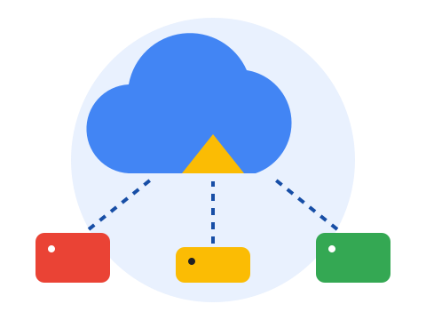

Servidores
Máquinas físicas y virtuales con su sistema y su configuración, listas para funcionar en la nube.
Trasladamos tus servidores, bases de datos y aplicaciones locales a Google Cloud y AWS con un plan cerrado, copia de seguridad antes de cada paso y pruebas de rendimiento.

Máquinas físicas y virtuales con su sistema y su configuración, listas para funcionar en la nube.
Tus bases de datos pasan con todos sus datos y comprobamos que coinciden antes de hacer el cambio.
Aplicaciones internas y webs corporativas, adaptadas para rendir bien en su nueva infraestructura.
Buena opción si tu empresa ya usa Google Workspace, porque se integra con tus cuentas y herramientas.
Buena opción si necesitas una gama muy amplia de servicios o ya tienes aplicaciones en Amazon.
Si lo necesitas, combinamos las dos plataformas con una arquitectura multicloud (incluida en el Plan Empresa).
Listamos tus servidores, bases de datos, aplicaciones y las dependencias entre ellos.
Decidimos qué se traslada tal cual y qué conviene adaptar para aprovechar la nube.
Movemos por fases, con copia de seguridad previa y pruebas de rendimiento en cada una.
Cambiamos el tráfico a la nube y mantenemos el sistema antiguo hasta confirmar que todo funciona.
Comprobamos que los datos migrados coinciden con los originales antes del cambio.
Planificamos fechas cerradas para que tu actividad diaria no se interrumpa.
Cada fase empieza con una copia de seguridad, para poder volver atrás si hace falta.
Vigilamos tus sistemas después del lanzamiento y resolvemos cualquier incidencia.
Escríbenos y te preparamos una auditoría gratuita de tu infraestructura actual.
Escribir a Jäger Cloud